Основной раздел справки
- Содержание
- 1. Введение
- 2. Файлы конфигурации
- 3. Интерфейс
-
- 3.1. Строка меню
-
- 3.1.1. Меню "Файлы"
- 3.1.2. Меню "Выделение"
- 3.1.3. Меню "Команды"
- 3.1.4. Меню "Вкладки"
- 3.1.5. Меню "Вид"
- 3.1.6. Меню "Настройка"
- 3.1.7. Меню "Помощь"
- 3.2. Панель инструментов
- 3.3. Панель кнопок дисков
- 3.4. Кнопка меню дисков
- 3.5. Панель заголовков вкладок
- 3.6. Имя текущего каталога
- 3.7. Панель заголовков колонок
- 3.8. Строка состояния
- 3.9. Окно консоли
- 3.10. Командная строка
- 3.11. Панель кнопок функциональных клавиш
Double Commander — продукт отечественного программиста Александра Коблова (Alexx2000@mail.ru), основанный на Sexi Commander (автор — Radek Cervinka, radek.cervinka@centrum.cz).
Double Commander это кроссплатформенный (что означает для Linux и для Windows) файловый менеджер, с поддержкой WCX, WFX, WDX, WLX и DSX плагинов. Последний формат — это собственные поисковые плагины DC. Нужно отметить что в Windows версии Double Commander работают многие плагины от Total Commander (TC), а это более половины из тех, которыми я пользовался). А Linux версия, вообще не имеет аналогов подобного типа. После установки в составе DC уже имеются WCX (архиваторные) плагины и можно работать с архивами cpio, deb, rpm, bz2, rar, zip, tar, gz, tgz как с каталогами, так же поисковый плагин (DSX) и плагин для просмотра видео с помощью Mplayer в Linux (WLX), остальные можно установить самостоятельно.

1. Введение
На странице загрузки программы мы видим, несколько доступных для скачивания вариантов. Сначала нужно выбрать вариант для вашей операционной системы (Windows или Linux) и необходимую разрядность (32 или 64). После чего можем выбрать необходимый вид дистрибутива. Для Windows это или исполняемый файл .ехе или архив .zip (который является так называемой portable версией).
Для Linux имеются варианты, для самых распространенных дистрибутивов и рабочих столов. К закачке предлагаются уже готовые пакеты deb для Debian-подобных систем (например, Ubuntu и производные), а так же пакеты rpm для Linux Mandriva (сразу надо отметить, что на момент написания статьи версии с QT-интерфейсом для 64 разрядных систем нет). Так же в наличии portable версия в виде архива .tar.bz2, она же является и исходным кодом, из которого можно собрать программу самому. Что касается среды рабочего стола, то тут есть варианты для Gnome, это версия основанная на библиотеке Gtk2, и для KDE версия основанная на QT соответственно. Заранее оговорюсь, что из репозитория эта программа пока недоступна.
При первом запуске Double Commander (он переведен на 8 языков) автоматически определяет языковые настройки системы, выбирает язык, который в системе является главным и определяет его для своего интерфейса. В дальнейшем язык можно поменять в меню "Настройка → Параметры → Язык". Так же Double Commander подхватывает тему оформления, установленную в системе. Получается что-то вроде этого:
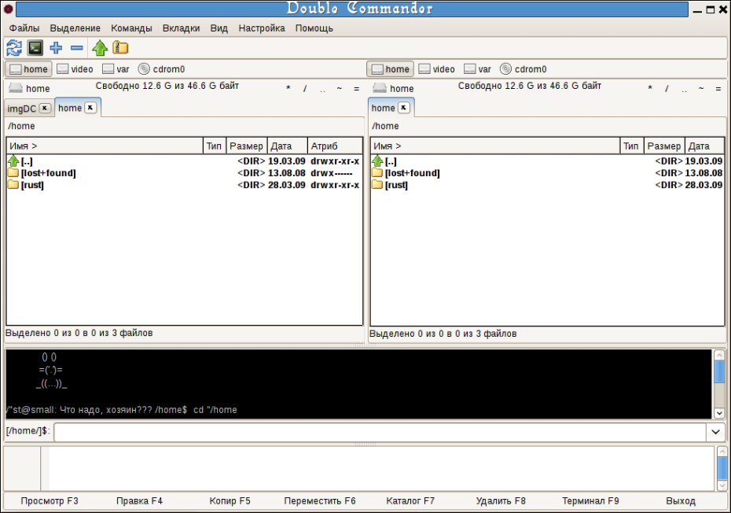
Как видно из рисунка, нам доступны две файловые панели, черненькое окно терминала, под которым находится командная строка (как в TC) и самое нижнее окошко это окно лога (в нем отображаются все действия, которые выполняет файловый менеджер).
2. Файлы конфигурации
Свои настройки Double Commander хранит в конфигурационных файлах либо в каталоге программы либо в домашнем каталоге пользователя. Основными файлами являются:
doublecmd.ini — все главные настройки программы (по аналогии с wincmd.ini)
default.bar — настройки панели инструментов (по аналогии с TC)
editor.col — настройки редактора
shortcuts.ini — настройки горячих клавиш
cmdhistory.txt — история командной строки
dirhistory.txt — история смены каталогов
edithistory.txt — история редактировавшихся файлов (с помощью F4)
maskhistory.txt — историю применения масок, для поиска, выделения и т.д.
doublecmd.log — история всех операций из окна лога
doublecmd.ext.example — пример настроек ассоциаций файлов
Структура этих файлов подробно описана в соответствующих разделах справки. Практически все настройки в этих файлах можно менять из GUI программы.
3. Интерфейс
Интерфейс Double Commander'а
3.1. Строка меню

Строка меню позволяет получить доступ ко всем возможностям Double Commander. Но не забывайте, что большинство действий можно выполнить и другими способами: при помощи горячих клавиш или кнопок на панели инструментов.
3.1.1. Меню "Файлы"
В этом меню собраны практически все операции, которые можно производить над файлами. Рассмотрим все пункты по порядку.
Создать ссылку (команда cm_HardLink). Если выбрать этот пункт, то Double Commander создаст жесткую ссылку на файл, который находится под курсором, и поместит ее в папку, открытую в другой панели.
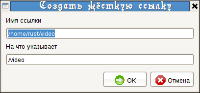
Имя ссылки — здесь указывается место расположения ссылки и ее имя. Именем является последнее слово которое стоит после последнего слеша в строчке
На что указывает — эта строчка показывает на что будет "ссылаться" ссылка.
Создать символьную ссылку (команда cm_SymLink). Все аналогично предыдущему пункту, только ссылка будет символьная.
Выбрав пункт Свойства... (команда cm_FileProperties) мы получим вот такое окошко
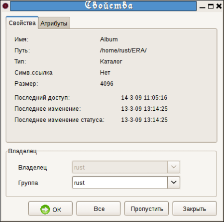 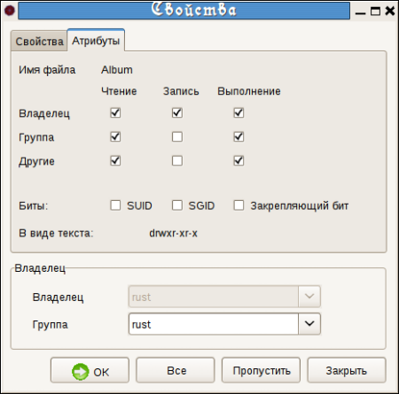
в котором указано имя файла или папки, расположение, размер, время записи и последнего доступа, а так же владелец и группа. На вкладке "Атрибуты" можно изменить уровень доступа к файлу (если у вас есть на это права). Действует только на файл или папку под курсором.
Воспользовавшись пунктом Редактировать комментарий (команда cm_cm_EditComment) вы сможете создавать или редактировать комментарии к файлам и папкам. Поддерживаются кодировки UTF, ISO, KOI, ANSI и т. д.
Рассчитать занимаемое место (команда cm_CalculateSpace) рассчитывает размер выделенных папок и файлов в удобных для восприятия округленных единицах и в байтах
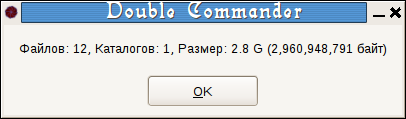
Сравнить по содержимому (команда cm_CompareContents) вызывает окно с двумя полями, в которых открываются файлы для сравнения (обычно текстовые).

Сравнить файлы — запускает процесс сравнивания файлов. Строчки, в которых есть отличия, выделяются красным цветом (по умолчанию). Имеется синхронная вертикальная и горизонтальная прокрутки. Файлы можно выбирать любые.
Следующее — выполнить переход на следующее различие.
Предыдущее — выполнить переход на предыдущее различие.
Двоичный — способ сравнения файлов, результат представляется в двоичном виде.
Одновременная прокрутка — позволяет просматривать файлы с одновременной синхронной прокруткой в обоих окошках.
Закрыть — закрывает окно сравнения файлов.
Множественное переименование (команда cm_MultiRename)
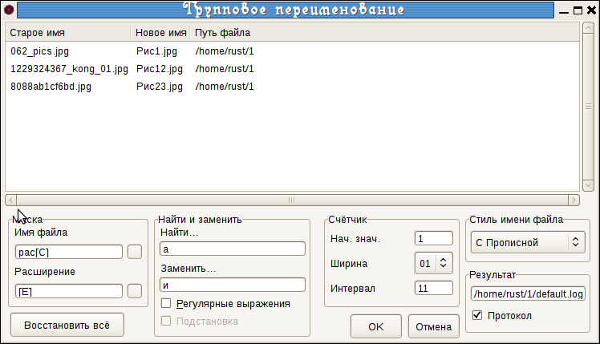
Ппозволяет переименовывать группу файлов по определенной маске. Например, несколько файлов с разными именами в файлы с именами "Рис 1", "Рис 2", "Рис 3" и т. д. Выделяем файлы которые надо переименовать и получаем окошко (см. выше). В главном поле видим какой файл в какой будет переименован.
В группе Маска можно задать маску для имени файла и расширения. Здесь доступны следующие макросы:
[N] — будет то же имя что и у исходного файла
[Nx] — будет взята х-овая буква в названии. Например, для имени файла "Рисунок" выбор [N5] приведет к тому, что будет взята только буква «н» (пятая по счету)
[Nx:x] — будут взяты буквы с х-овой по х-овую. Например, для "Рисунок" и [N1:4] получим "Рису"
[C] — обозначает счетчик, его параметры указаны в группе Счетчик
можно совмещать использование макросов и свой собственный текст (как на картинке).
Группа Найти и заменить поможет, когда необходимо произвести замену части имени файла (на рисунке буква "а" меняется на "и" поэтому название будет не "рас", а "рис"). Доступна работа с регулярными выражениями
В группе Счетчик задаются параметры этого самого счетчика: начало нумерации (с какой цифры будет начинаться нумерация новых имен). Ширину числа 1, 01, 001, 0001 и т. д. до 10 знаков. Интервал (шаг) — на сколько будет изменяться номер в следующем по порядку файле (в моем случае 11).
В списке Стиль имени файла можно выбрать один из вариантов:
Без изменений — новые названия будут указываться аналогично старым.
ПРОПИСНЫЕ — новые имена и расширения будут состоять из прописных букв.
строчные — новые имена и расширения будут состоять только из строчных букв.
С прописной — новые имена файлов будут начинаться с большой буквы.
В группе Результат можно включить ведение протокола работы и указать расположение лог-файла.
Выбрав пункт Упаковать (команда cm_PackFiles) мы вызовем стандартный диалог упаковки файлов в архивы zip, tar.gz, tgz, может быть и rar, если в системе установлен соответствующий архиватор.
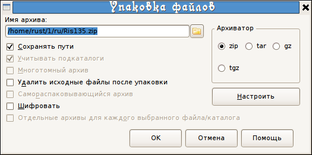
Обратное действие можно выполнить, воспользовавшись пунктом Распаковать (команда cm_ExtractFiles). Этот же диалог вызывается при копировании файла из архива, если вы зашли туда как в каталог.

В первой строке указывается каталог назначения (т. е. куда будет распакован архив). Его можно сменить вручную или нажав на кнопку справа от строчки. В поле Маска для распаковки, можно указать какие файлы будут распакованы, или с каким нибудь одним расширением или с соответствующим именем. Зависит от того как настроить маску. Например на рисунке будут распакованы файлы только с расширением .txt. При отсутствии такой необходимости, маску трогать не надо. История маски доступна в выпадающем списке. Галка Распаковать каждый архив в отдельный каталог (с именем архива) позволяет распаковать сразу несколько выделенных архивов, каждый в свою папку.
Два последних пункта Разрезать файл и Собрать файлы (команды соответственно cm_FileSpliter и cm_FileLinker)
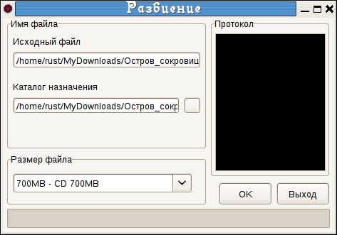
Исходный файл — указывается файл, который нужно разрезать.
Каталог назначения — следует указать в какую папку будут помещены части файла после его разрезания
Размер частей файла — указывается размер частей на которые будет разрезан файл. Можно ввести как свое значения, так и воспользоваться предустановленными:
1457664B — 3.5" — размер для дискеток формата 3.5 (флоп)
98078KB - ZIP 100MB — размер для дискет формата ZIP, если есть ZIP привод с дискетами)))
650MB - CD 650MB — размер для CD диска
700MB - CD 700MB — размер для CD диска
После нажатия на кнопку OK, в каталоге назначения получаете части этого файла нужного размера с расширением .split Чтобы собрать файл, выделяете все части файла с расширением .split и выбираете Собрать файлы(cm_FileLinker). Указываете из каких частей и в каком порядке необходимо производить сборку.
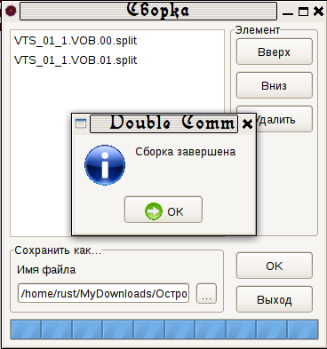
Эта функция полезна если файл очень большой, а носитель маленький. Есть возможность перенести файл по частям (по аналогии с TC).
3.1.2. Меню "Выделение"
Здесь сосредоточенны команды, при помощи которых можно выделять группу файлов а также производить разные действия с выделением.
Первый и второй пункты Выделить группу и Снять выделение с группы (команды cm_MarkPlus и cm_MarkMinus). Это команды выделения группы файлов по маске. В маске можно указать часть названия имен файлов или расширения.
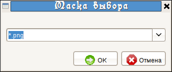
Например, будут выделены все файлы в каталоге с расширением .png, кнопка со стрелкой вниз в конце строки дает доступ к истории маски.
Третий и четвертый пункты Выделить все (команда cm_MarkMarkAll) и Снять выделение со всех (команда cm_MarkUnmarkAll). С их помощью можно выделить все файлы и папки которые находятся в директории в выбранной панели и снять это выделение.
Пятый пункт это Инверсия выделения (команда cm_MarkInvert). При этом со всех выделенных файлов и папок в текущем каталоге снимается выделение, а все неотмеченные наоборот выделяются.
Шестой и седьмой пункт Выделить файлы по расширению (команда cm_MarkCurrentExtension)и Снять выделение по расширению (команда cm_UnmarkCurrentExtension). С помощью этой функции можно выделить все файлы, которые имеют то же расширение, что и файл под курсором. А также снять выделение с файлов выделенных таким способом.
Восьмой и девятый пункт Копировать имена файлов в буфер (команда cm_CopyNamesToClip) и Копировать полные имена файлов (команда cm_CopyFullNamesToClip). Первая команда копирует список имен всех выделенных файлов в буфер обмена. Вторая команда копирует полные имена (путь + имя) выделенных файлов в буфер обмена.
3.1.3. Меню "Команды"
Первым пунктом идет Поиск (команда cm_Search).
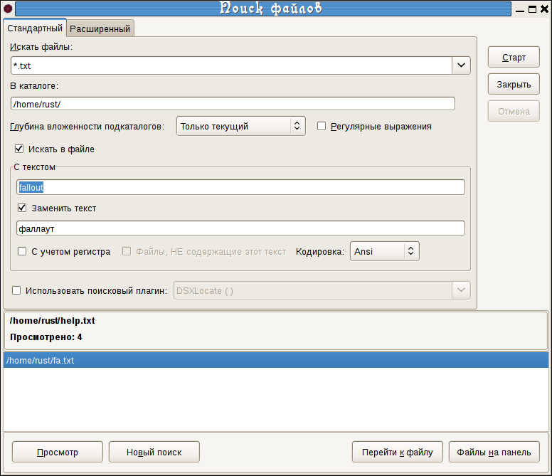
В строке Искать файлы задаем маску, по которой будет осуществляться поиск.
Ниже, в строке В каталоге указываем начальный каталог для поиска, если он известен. В противном случае оставляем "/".
Глубина вложенности подкаталогов может принимать значения:
Только текущий
Число уровней (на ваш выбор от 1 до 100)
Все (неограниченная)
Эта настройка управляет глубиной "погружения" по дереву каталогов во время поиска. Указав "Только текущий", мы ограничим поиск папкой, указанной в строке "В каталоге" (подпапки просматриваться не будут).
При необходимости можно применять регулярные выражения.
Если установлена галка Искать в файле — во время поиска будет происходить просмотр содержимого найденных файлов и в результаты пойдут только те, которые содержат слово, указанное в строке С текстом. Так же, во время поиска можно сразу заменить данное слово на другое поставив галочку Заменить текст и указав на что заменить в строке ниже этой опции.
С учетом регистра — указывает, что прописные буквы надо отличать от строчных. Т. е. "Fallout" и "fallout" будут восприниматься как разные.
Файлы, НЕ содержащие этот текст, заставляет программу показывать только те файлы, в содержании которых не найдены слова указанные в поле С текстом. Здесь же можно указать кодировку, поддерживается UTF, ISO, KOI, DOS, ANSI и т. д.
Использовать поисковый плагин: поиск осуществляется с помощью поискового плагина Locate.
В нижней части окна находится поле, в котором отображаются результаты поиска, и несколько кнопок.
Просмотр — открывает выбранный файл в окне просмотрщика (F3).
Новый поиск — очищает поле результатов и позволяет запустить поиск заново (возможно, с другими условиями).
Перейти к файлу — закрывает окно поиска, и открывает Double Commander в папке где находится выделенный файл (курсор устанавливается на этом файле).
Файлы на панель — выдает список файлов с полными путями к ним в файловой панели Double Commander.
Вкладка Расширенный позволяет указать дополнительные параметры для поиска файла: Дата (от и до), Время (от и до), Размер файла (от и до), а так же атрибуты и возраст файла.
Второй пункт Личный список каталогов (команда cm_DirHotList). Эта команда аналогична нажатию на кнопку "*".
При выборе этого пункта получаем выпадающее меню, из которого можно выбрать ранее добавленные закладки, добавить текущее расположение в закладки (а если оно есть, то удалить) и настроить уже добавленные. При настройке в открывшемся окошке можно сделать то же самое.
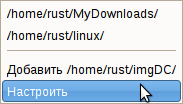
Добавить — открывает окно диалога добавления новой закладки.

Удалить — удаляет выбранную закладку.
Добавить вручную — открывает строку, куда вводится путь к новой закладке вручную.
Редактировать — позволяет вручную отредактировать уже добавленную закладку (Настройка хранится в doublecmd.ini, в секции [Configuration] параметр HotDir= все закладки вписываются через запятую).
Третий пункт Пуск терминала (команда cm_RunTerm) — открывает терминал в текущей папке (настройки терминала указаны в разделе Пуск терминала).
Четвертый пункт Открыть VFS (виртуальная файловая система) используется плагинами (WFX, WCX и т. д.), которым для работы нужна своя файловая система. При добавлении и настройке соответствующих плагинов, по команде будет открываться их список, предоставляя возможность работы с ними.
Пятый пункт Поменять панели местами (команда cm_Exchange), в правой панели будет открыт тот каталог, который был открыт в левой и наоборот.
Шестой пункт Две одинаковые панели (команда cm_TargetEqualSource) — открывает в неактивной панели тот же каталог, который открыт в активной, аналогично нажатию кнопки «=».
3.1.4. Меню "Вкладки"
Как видно по названию, предназначено для управления вкладками файловый панелей.
Первый пункт Новая вкладка (команда cm_NewTab) — добавляет новую вкладку на панель, открывает в ней тот же каталог, в котором была открыта предыдущая активная. И переходит на нее.
Второй пункт Открыть каталог в новой вкладке (команда cm_OpenDirInNewTab) — открывает новую вкладку на панели в том каталоге, который находится под курсором, не делает вкладку активной.
Третий пункт Удалить вкладку (команда cm_RemoveTab) — закрывает текущую активную вкладку, переходит на следующую вкладку, которая находится правее, если справа нет, то на предыдущую левее.
Четвертый пункт Удалить все вкладки (команда cm_RemoveAllTabs) — закрывает все неактивные вкладки, если среди них есть заблокированные, то выдает соответствующий вопрос.
Пятый пункт Заблокировать, с возможностью смены каталога (команда cm_ToggleLockDcaTab) — во вкладке заблокированной таким образом, можно сменить каталог, однако при переключении на другую вкладку и возврате (а также при перезапуске DC), будет открыт каталог, который был в момент блокирования.
Шестой пункт Заблокировать вкладку (команда cm_ToggleLockTab) — делает вкладку заблокированной, при переходе в другой каталог, открывается новая вкладка, и работа уже идет в ней. А в заблокированной всегда открыт один и тот же каталог.
Седьмой и восьмой пункты Переключится на следующую (команда cm_NextTab) и предыдущую вкладку (команда cm_PrevTab) — соответственно переключается на вкладку правее (следующая) и левее (предыдущая) вкладки.
3.1.5. Меню "Вид"
Позволяет управлять отображением содержимого файловых панелей.
Первые пять пунктов: Имя (команда cm_SortByName), Расширение (команда cm_SortByExt), Размер (команда cm_SortBySize), Дата (команда cm_SortByDate), Атрибуты (команда cm_SortByAttr) — отвечают за сортировку в файловых панелях по имени, расширению, размеру, дате и атрибутам соответственно. Аналогичных результатов можно добиться, щелкнув левой кнопки мыши по нужному заголовку колонок файловых панелей.
Шестой пункт Обратный порядок (команда cm_ReverseOrder) —сортирует файлы и папки в файловых панелях в противоположном порядке, по отношению к текущему.
Седьмой пункт Обновить (команда cm_Refresh) — заставляет Double Commander перечитать содержимое каталога.
Восьмой пункт Показывать системные файлы (команда cm_ShowSysFiles) управляет отображением системных файлов и папок. В Линуксе это файлы и папки, название которых начинается с точки. Аналогичная настройка — Показывать системные файлы.
3.1.6. Меню "Настройка"
Первый пункт Параметры (команда cm_Options) вызывает диалоговое окно "Настройка". Именно здесь находятся основные настройки нашей программы!!! Рассмотрим все разделы этого окна по порядку.
Первый раздел, это Язык. Тут мы видим 9 вариантов перевода. Нужно выбрать тот, который вы лучше всех понимаете.
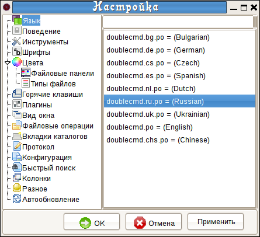
Следующий раздел Поведение

Строка Запустить в терминале: у меня записано gnome-terminal -e sh -c, а по умолчанию xterm -e sh -c. Тут можно вписать свою программу, которую вы используете в качестве терминала, в своем рабочем окружении (у меня Gnome поэтому я вписал gnome-terminal ), или оставить как есть, тогда будет использоваться стандартный терминал для иксов. При изменении программки, надо оставлять ключи -e sh -c. Это для того, чтобы можно было запускать программы из Double Commander в терминале (Shift+Enter по умолчанию).
Пуск терминала — сюда можно вписать то, что будет запускаться по нажатию клавиши F9 или по команде Пуск терминала (причем не обязательно это должен быть терминал ;) ).
Выбрать каталог на цифровой клавиатуре честно скажу, у меня ноутбук. Но пока вроде она ни за что не отвечает.
Навигация в стиле Lynx — это когда при навигации в панели файлов, при нажатии на стрелку вправо открывается каталог под курсором или запускается программа под курсором, а при нажатии на стрелку влево открывается родительский каталог.
Сортировка с учетом регистра — при включенной опции, сортировка файлов будет учитывать прописные буквы. Сначала будут сортироваться файлы, в имени которых есть прописные буквы, а потом остальные.
Короткий размер файла — при отображении размера файла в файловой панели, в колонке "Размер" он округляется и пишется в МБ, КБ, ГБ, ТБ и т. д.
Сворачивать в системный трей — Double Commander будет сворачиваться в значок в трее, а не в список окон на панель.
Формат даты и времени — может принимать значения от "день, месяц, год" до "день, месяц, год, часы, минуты, секунды" в различных вариациях. Так будет отображаться дата в колонке Дата на файловой панели.
Обрезать текст по ширине колонки — эта функция нужна, когда при изменении размера главного окна Double Commander текст в колонках начинает налазить на соседние колонки.
Показывать системные файлы — чтобы отображались файлы, название которых начинается с точки (в Линукс).Так же можно менять не в настройках, а в меню Вид в разделе Показывать системные файлы.
Показывать значки, Размер — для отображения значков файлов и папок слева от их названий в файловых панелях. Размеры могут быть 16х16, 22х22 и 32х32 пикслея.
Выделение мышью, Режим — возможность выделять и снимать выделение с файлов и папок с помощью мыши. Режим имеет значение Левая клавиша или Правая клавиша, соответственно выделение происходит с помощью левой или правой клавиши мыши.
Прокрутка — возможность использовать колесико мыши для навигации, просматривания каталога с большим количеством фалов.
Построчно с движением курсора — при вращении колесика список будет передвигаться на несколько строчек, при этом курсор будет сдвигаться на один пункт вниз или вверх.
Построчно — то же самое, только без движения курсора, он будет оставаться в одном положении.
Постранично — то же самое, только без движения курсора, он будет оставаться в одном положении
Черный список дисков — в эту строчку вписываются диски, которые не нужно отображать на панели дисков. Если дисков несколько, то они вписываются через точку с запятой ";" без пробелов (например home;local).
Раздел Инструменты. Здесь можно указать свои программы для редактирования (F4), просмотра (F3) и программу для поиска отличий.
Раздел Шрифты
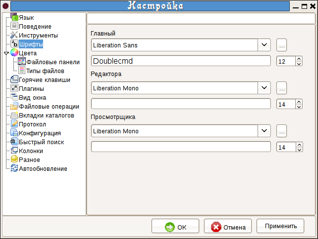
Здесь можно выбрать шрифты для редактора (F4), просмотрщика (F3) и главный для программы, а так же их размеры. Нижняя строчка под каждым выбором, служит для того, чтобы посмотреть как отображается выбранный шрифт. Одно важное замечание: шрифты для редактора и смотрелки должны быть МОНОШИРИННЫЕ, иначе при просмотре и выделении буквы будут налезать друг на друга.

Вверху обычный шрифт, внизу моноширинный.
Раздел Цвета, Файловые панели

Сразу стоит оговориться, что все изменения, которые будут проведены в этом разделе, никак не отобразятся на внешнем виде Double Commander. Это связано с тем, что здесь указываются, так скажем, глобальные настройки, которые применяются только при создании нового (своего) стиля. Коротко можно объяснить так: В Double Commander существует возможность выбирать стили оформления для каждой панели отдельно, более того, не только для каждой панели, но и для каждой ВКЛАДКИ!!! В связи с этим, чтобы настроить внешний вид коммандера, необходимо настраивать текущий стиль колонок (по умолчанию их создано два Default и Breif) и/или создавать свои, чтобы потом их применять для любой вкладки, но об этом позже.
Здесь можно выбрать цвета, которые будут использоваться для оформления файловых панелей. Цвет текста, Цвет фона (существует возможность выбора дух цветов фона, чтобы оформить его как зебру))) Цвет выделения, Цвет курсора, а так же Цвет текста под курсором.
ВНИМАНИЕ!!!! В графе "Фон 1" указывается цвет пустого пространства в файловой панели.
Инверсное выделение — инвертирует цвета выделенного текста и выделенного текста под курсором. Про цветовые настройки более подробно описано в разделе Колонки.
Раздел Цвета, Типы файлов

Здесь можно указать типы файлов, которые должны выделяться другим цветом, отличным от цвета шрифта.
В строку Наименование нужно вписать описание файла, что он делает или какой программой открывается (чтобы потом не запутаться).
В строку Маска вписывается маска (части имени и расширения), по которым Double Commander будет их распознавать. Если их несколько, то они вписываются через точку с запятой ";" без пробелов. Звездочка "*" обозначает любую часть с любим количеством символов.
В строку Атрибуты вписываются атрибуты файлов с помощью которых так же будет распознаваться различные их виды, для обозначения их цветом.
Не забывайте нажимать на кнопочку Применить после внесения изменений в список или в свойства.
Раздел Горячие клавиши
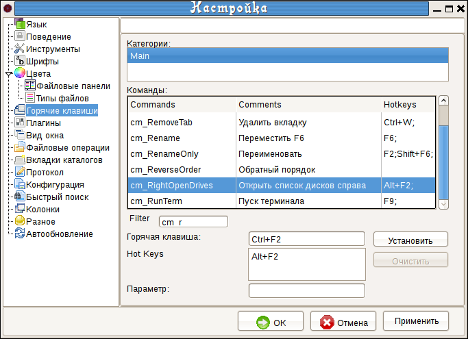
Здесь можно переназначить клавиши, которые выполняют какие либо команды, а так же указать параметры этих команд для выполнения.
Категории — в этом поле отображаются категории горячих клавиш (сочетаний). Main — главная категория.
Команды — список всех доступных внутренних команд в Double Commander. Список представлен в виде таблицы из трех колонок
Commands (указываются названия всех доступных команд)
Comments (краткое описание команды)
Hotkeys (указывается уже назначенные (если есть) сочетания клавиш)
Фильтр — аналогия быстрого поиска, только по служебным командам. При введении в это поле каких-либо символов, выводятся только те команды, название которых начинается с этих символов.
Горячая клавиша — указывается новое клавиатурное сочетание, которое будет назначено для этой команды. Нужно поместить курсор в эту строку, и нажать соответствующие сочетание горячих клавиш
Hot Keys — в этом поле показываются уже назначенные клавиатурные сочетания для этой команды. А так же выводится предупреждение, если новое сочетание уже используется в другой команде
Параметр — служит для назначения какого-либо параметра который будет использован при выполнении этой команды
Установить — устанавливает новое клавиатурное сочетание. Из строки "Горячая клавиша", сочетание будет перемещено в поле "Hot Keys". И начнет отображаться в соответствующей колонке
Очистить — удаляет сочетание горячих клавиш, выбранное в поле Hot Keys
Например чтобы установить смену дисков c Alt+F1 и Alt+F2 на Ctrl+F1 и Ctrl+F2 (в линуксе первые два сочетания заняты) нужно выделить команду cm_RightOpenDrives, установить курсор в поле "Горячая клавиша" и нажать сочетание клавиш Ctrl+F2 которое появится в поле. Теперь нужно нажать "Установить" и все. Точно так же сделать для cm_LeftOpenDrives и Ctrl+F1.
Раздел Плагины пока пропущу, потому что в настоящее время не могу найти отдельные плагины для Линукса, а по умолчанию ничего менять не надо. Единственное, что можно сказать, так это то, что плагин для просмотра видео работает только если в системе установлен Mplayer.
Раздел Вид окна
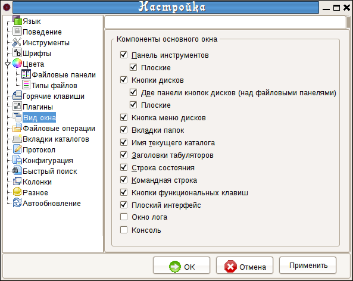
Тут можно изменить вид главного окна Double Commander. Думаю, не стоит много описывать, проблем здесь возникнуть не должно. Вот скриншот программы, с отключенными элементами управления и дополнительными окнами.

Раздел Файловые операции

Размер буфера (Кб) — здесь указываться какое количество памяти будет выделяться для буфера программы, при работы с файлами.
Использовать отображение в память, при поиске текста в файлах — при таком поиске, файл делается частью виртуальной памяти, и происходит её просмотр на наличие искомого текста. Обращение к нему идет не как к файлу, а как к оперативной памяти (быстрее, но нужен мощный компьютер).
Использовать поток, при поиске текста в файлах — если используется этот метод, то файл считывается по частям, и в каждой части идет поиск нужного текста (медленнее, но требует меньше ресурсов).
Число перезаписей при стирании (Wipe)(команда cm_Wipe) — это функция для полного уничтожения файлов с жесткого диска. При стирании файла с использованием этой функции (Alt+Del по умолчанию), место на диске, где был файл, несколько раз перезаписывается, здесь можно указать число перезаписей.
Сбросить флаг "Только для чтения" — при работе с файлами (копирование, перемещение) Double Commander будет сбрасывать этот флаг в Windows, добавляя флаг разрешения на запись, если он отсутствует в Linux.
Обрабатывать комментарии с файлами/папками — используется при работе с комментариями.
При переименовании выделять имя файла без расширения — при переименовании будет выделено только имя файла. Расширение не охватывается выделением.
Показывать панель выбора вкладок в диалоге копирования/перемещения — если при копировании/перемещении в панели открыто несколько вкладок, то будет предоставлен выбор вкладки в которою будет скопирован/перемещен файл.
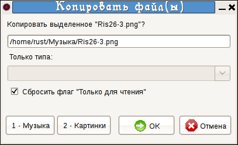 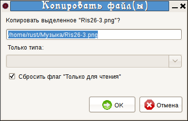
Раздел Вкладки каталогов

Показывать заголовок вкладки, даже если она одна — если в панели открыта только одна вкладка, то для удобства панель с заголовками исчезает, а если отмечен данный пункт, то остается.
Размещать вкладки в несколько рядов — когда открыто большое количество вкладок, и они не умещаются в одну строчку, то по умолчанию по бокам появляются стрелки, за которые и уходят заголовки вкладок. А если отмечена эта опция, то заголовки вкладок выстраиваются в два или три ряда.
Ограничить размер заголовка до — если вновь созданная вкладка имеет очень длинное название, то она может занимать половину ширины панели, чтобы такого не было название вкладки можно ограничить.
Подтверждать закрытие всех вкладок — чтобы уберечь от случайного выполнения команды Удалить все вкладки.
Отмечать заблокированные вкладки звездочкой * — чтобы отличить заблокированные вкладки от не заблокированных, в на звании заблокированных вкладок впереди будет изображаться звездочка.

Здесь вкладка wine заблокирована, а rust не заблокирована.
Делать панель активной при щелчке по одной их ее вкладок — если эта функция включена, то при переключении мышью на вкладки соседней панели, фокус автоматически будет переноситься на нее. Курсор будет находиться в том положении, в котором находился до переключения с этой вкладки.
Раздел Протокол

Здесь можно выбрать куда и в какой файл Double Commander будет записывать отчет об операциях. А также выбрать протоколируемые операции, их вид и тип.
Раздел Конфигурация
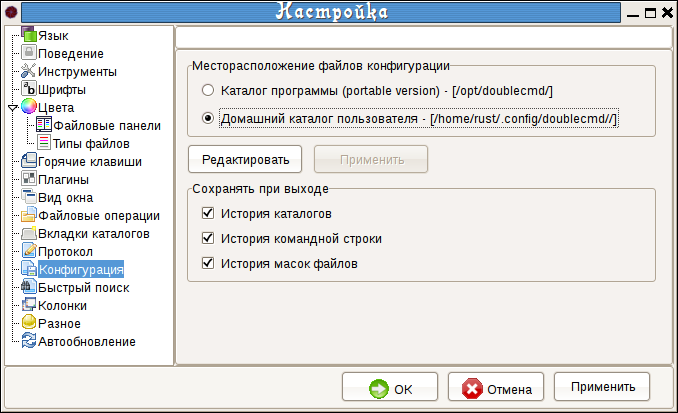
Здесь выбирается место хранения всех файлов конфигурации
Редактировать — чтобы вручную отредактировать различные настройки, в главном файле конфигурации doublecmd.ini.
Так же можно настроить, какой вид историй будет сохранять Double Commander, это полезно для облегчения навигации и работы.
История каталогов — сохраняет историю всех посещенных каталогов.
История командной строки — сохраняет историю команд, которые вводились в эту строку.
История масок файлов — помогает вспомнить какие файлы вы уже искали и вообще какие маски файлов вы применяли.
Раздел Быстрый поиск
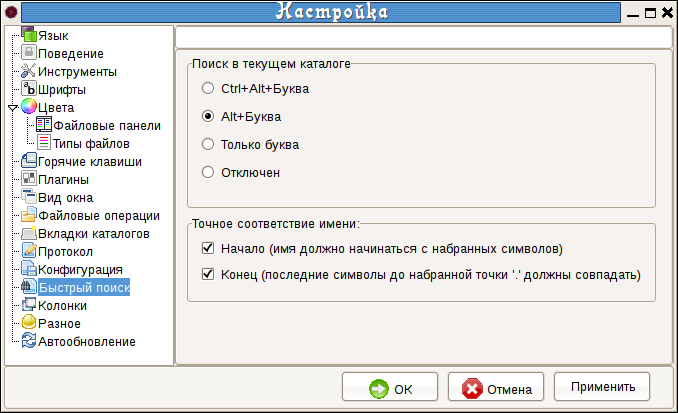
Быстрый поиск, это поиск файлов по списку в файловой панели. Здесь можно определить в каком сочетании горячих клавиш он будет включаться. А также определить некоторые параметры поиска.
Точное соответствие имени файла начальным буквам в поиске — это означает что курсор будет передвинут на тот файл в начале имени которого будут набранные в строке поиска буквы или знаки.
Конец (последние символы до набранной точки '.' должны совпадать) — это пригодится в том случае, если известно только окончание названия файла, например заканчивается на ...us.ext, тогда в быстром поиске можно набрать *us.ext и курсор перейдет на первый файл который соответствует этой маске.
Раздел Колонки

В этом разделе можно настроить вид файловых панелей количество и состав колонок, стиль их оформления, цвет, шрифт, цвет шрифта и т. д.
Настроить колонки для файловой системы — при наличии WFX плагинов, для отображения других файловых систем (отличных от стандартных и недоступных с помощью обычных средств OC), в этой строчке появится выбор возможности редактирования стилей, специально для этой нестандартной файловой системы.
В главном окне отображается список уже имеющихся стилей оформления колонок. После установки программы по умолчанию их создано уже два: Default и Brief. (на снимке добавлен мой стиль my_style).
Создать — создать новый свой стиль колонок. Откроется окно редактора стилей, где будет предложено ввести свое название и далее уже настраивать свой стиль.
Удалить — удаляет выбранный стиль колонок.
Копировать — копирует стиль. При этом появляется еще один стиль, с такими же настройками, как и у того который копировали, а в конце названия нового стиля дописывается _Copy. Это может пригодится в том случае, если нужно создать стиль, похожий на какой-то из имеющихся, при этом не удаляя предыдущий.
Редактировать — открывает диалог редактора стиля колонок.
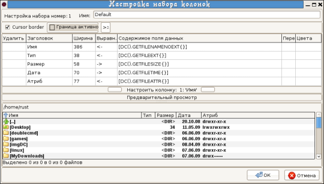
Настройка набора номер: 1 Имя — здесь указывается имя набора. Номер набора берется как порядковое число под которым он находится в главном окошке раздела Колонки.
Таблица настроек — эта таблица определяет количество колонок, их название, содержание, расположение, размер.
Настроить колонку:1 'Имя' — в этой строчке с помощью кнопок слева и справа можно выбирать, какую колонку на данный момент нужно редактировать. А так же открывается диалог настройки цветов и шрифтов
Предварительный просмотр — в этом окошке видно как будет выглядеть панель с новыми настройками, пока еще их не применили.
Рассмотрим таблицу
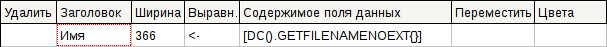
За настройку одной колонки, отвечает одна строчка в этой таблице. То есть если в таблице 5 строк, то колонок в этом стиле будет тоже 5.
Параметры, которые определяет таблица для колонки:
Удалить — позволяет удалить любую строчку, в которой будет нажата соответствующая ячейка.
Заголовок — в этом поле указывается название колонки, то что будет отображаться в панели заголовков колонок. Сюда можно вписать любое слово, желательно, чтобы оно отображало содержание этой колонки.
Ширина — это ширина колонки (в пикселях), которая будет при запуске DC если выбран данный стиль. Ширина должна зависеть от содержания колонки. Если это расширение файла, то нет смысла делать эту колонку широкой.
Выравнивание — указывает к какому краю будет прижато название колонки. Имеет три значения
(< -) выравнивание по левому краю
(- >) выравнивание по правому краю
( = ) выравнивание посередине
Содержимое поля данных — в этом поле указывается самое основное, что будет содержать колонка — данные о файле или папке. Чтобы выбрать значение, надо нажать на плюсик, который появляется в углу этого поля. Имеет следующие значения:
GETFILENAME — отображает название папки или файла с расширением (text.txt).
GETFILENAMENOEXT — отображает название папки или файла без расширения (text).
GETFILEEXT — отображает расширение файла (все символы, которые идут с конца названия до точки, например .txt или .example).
GETFILESIZE — отображает размер файла или папки. Вид отображения зависит от опции Короткий размер файла в разделе Поведение.
GETFILETIME — отображает дату создания и изменения файла или папки. Вид выбирается в разделе Поведение.
GETFILEATTR — отображает атрибуты файлов и папок. Уровень доступа к ним.
GETFILEPATH — отображает путь к каталогу, в котором находится файл или папка. Это значение используется в случае отображения результатов поиска файлов. Для обычной работы в Double Commander не представляет интереса.
GETFILEGROUP — отображает название группы, которая является владельцем этого файла или папки.
GETFILEOWNER — отображает имя владельца файла или папки.
GETFILELINKTO — отображает путь и если есть, то и файл, на который указывает ссылка (символическая ссылка), если она присутствует в каталоге.
Переместить — позволяет перемещать строчки. Чем выше строчка, тем левее будет отображаться колонка, параметры которой указаны в этой строчке.
Цвета — позволяет настроить цвета и шрифт, которые будут использоваться в данной колонке. Для редактирования цветов, появляется вот такая часть окошка.
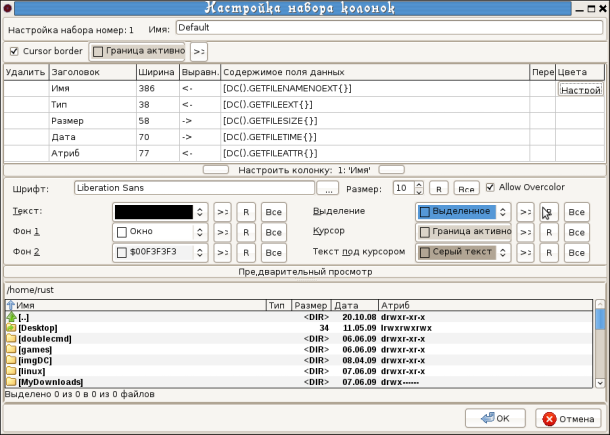
Можно получить такое окошко, нажав на кнопки стрелок по бокам от строчки Настроить колонку: 1:'Имя'.
Шрифт — в этой строке можно выбрать шрифт, который будет использоваться для отображения содержимого только данной колонки. Чтобы выбрать шрифт из набора системных, нужно нажать на кнопку «...» рядом со строчкой.
Размер — здесь можно указать размер шрифта, который будет использован.
R — эта кнопка возвращает первоначальные установки шрифта.
Все — распространяет эту настройку шрифта на остальные колонки, таким образом во всех остальных колонках, шрифт будет как и в этой.
Allow Overcolor — данная опция включает и отключает возможность отображения названий файлов другим цветом, выбранным в разделе Цвета Типы файлов.
Существует возможность выбрать цвет для следующих элементов: Текст, Фон1 и Фон2, Выделение, Курсор, Текст под курсором, которые будут использоваться в данной колонке.
Немножко о цвете
Имеется уже 20 предустановленных цветов от серого до черного (ну через красный и зеленый там))). А так же имеется, что самое замечательное, возможность выставлять цвет, такой же, какой и у элементов оформления общей темы системы от полосы прокрутки, до градиента неактивного заголовка. То есть, если будет меняться тема, то будет меняться и стиль колонок!!!! Следовательно, если применяется тема, в оформлении которой присутствуют текстуры, то эти текстуры можно применять и для оформления колонок (на снимке для Выделениия выбран Красный цвет, а для Курсора выбран цвет из темы оформления из элемента Выделение).
>> — кнопка для определения любого произвольного цвета из палитры. Также присутствует инструмент Пипетка для определения понравившегося цвета.
R — эта кнопка возвращает первоначальные настройки цвета. В данном случае, цвет будет браться из настроек, которые выбраны в разделе Цвета, Файловые панели.
Все — распространяет эту настройку цвета и на другие колонки.
Пример использования зависимости настоек колонок от темы, справа зависит, слева нет.

Пример независимых настроек в каждой колонке.

Пример использования текстур из темы оформления в оформлении колонок.

Раздел Разное
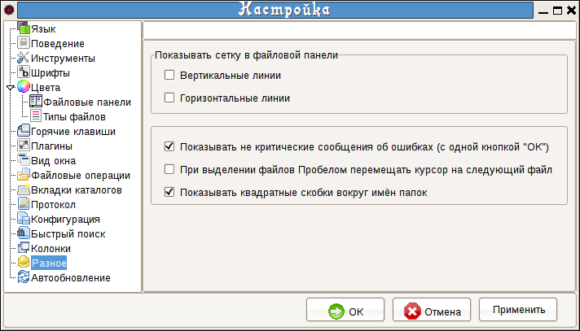
Вертикальные линии — включает вертикальные линии, которые визуально отделяют колонки друг от друга.
Горизонтальные линии — включает отображение горизонтальных линий, которые визуально отделяют строчки друг от друга.
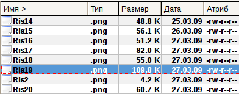 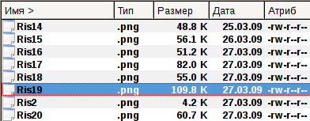
На левом рисунке включены обе опции, на правом обе отключены.
Показывать некритические сообщения об ошибках (с одной кнопкой "Ок") — если программа совершит действие или операцию с ошибкой, и при этом не произойдет никаких фатальных потерь, то будет показана ошибка с каким-либо содержанием, с одной кнопочкой "Ок". Иначе ошибка выводится не будет.
При выделении файлов Пробелом перемещать курсор на следующий файл — реализует способ выделения нескольких файлов с помощью клавиши пробел. При зажатом пробеле курсор спускается вниз отмечая файлы. По умолчанию комбинация Shift+Вниз или Shift+Вверх.
Показывать квадратные скобки вокруг имен папок — позволяет визуально папки отличать от файлов не смотря на их расширение, даже при отключенном показе иконок. Если не отмечено, то папки обозначаются просто своим названием без скобок.
Раздел Автообновление
Позволяет Double Commander отслеживать изменения в каталоге который открыт в файловой панели. Автоматизированный вариант Ctrl+R.
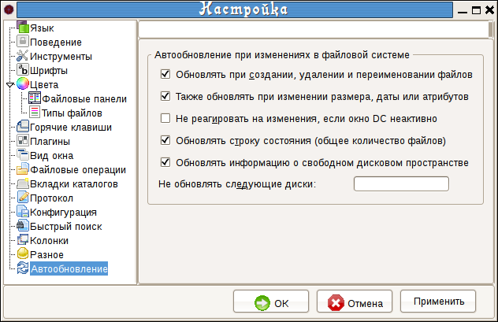
Обновлять при создании, удалении и переименовании файлов — сообщает коммандеру об изменении состава каталога, который открыт в файловой панели, при создании удалении и переименовании каких либо файлов или папок из сторонней программы (архиватор, другой файловый менеджер).
Также обновлять при изменении размера, даты или атрибутов — сообщает об изменениях в каталоге размера папок и файлов, даты доступа к ним или изменении их атрибутов (прав доступа), при помощи других программам.
Не реагировать на изменения, если окно DC не активно — если Double Commander свернут или находится на заднем плане (не активен), то при включении этой опции, он не будет получать информацию об изменении состава каталога, который был открыт в его файловой панели.
Обновлять строку состояния (общее количество файлов) — пция следит за строкой состояния, и своевременно сообщает ей об изменении количества файлов в каталоге. Даже если изменение производилось из другой программы.
Обновлять информацию о свободном дисковом пространстве — при включении этой опции, вы всегда будете знать, сколько свободного места осталось на ваших дисках.
Не обновлять следующие диски — в этой строке вписываются диски, информация о которых не должна обновляться, т. е. Double Commander не должен следить за изменениями в этих дисках. Диски вписываются с полным путем к ним, через точку с запятой ";" без пробелов (например, /home;/media/cdrom).
Пункт Файловые ассоциации (команда cm_FileAssoc)
Этот пункт открывает окно настроек файловых ассоциаций. Все ассоциации записываются в файл doublecmd.ext Пример файла с ассоциациями есть в директории с настройками программы, под названием doublecmd.ext.example.
С помощью раздела, можно настроить ассоциации файлов с различными программами, а так же назначить команды и скрипты которые будут выполняться над файлами, если ассоциации, которые есть в системе нас не устраивают. Указанные команды будут выводится в контекстном меню (команда cm_ContextMenu).
Типы файлов — поле содержит список групп расширений. В каждой группе может содержаться множество расширений файлов, и такую группу можно ассоциировать с различными программами.
Добавить — добавляет новую группу. Будет предложено ввести название группы, которое потом появится в списке. Например, Sound.
Удалить — удаляет выбранную группу.
Переименовать — позволяет задать группе новое имя, для более точного отображения состава группы.
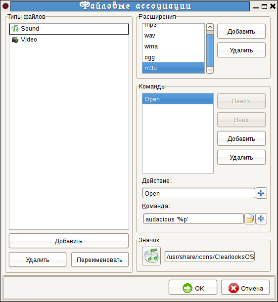
Расширения — в этом поле указываются расширения, которые входят в выделенную группу. Например, mp3, wma, ogg и т. д.
Добавить — добавляет расширение в группу.
Удалить — удаляет выбранное расширение из группы.
Команды — поле, содержащее список действий и команд, которые можно будет выполнить над файлами, имеющими расширения из данной группы.
Добавить — добавляет новую команду в список.
Удалить — удаляет выбранную команду из списка.
Вверх, Вниз — перемещает команду по списку.
Действие — в этой строке указывается как программа будет выполнять ниже приведенную команду с выбранным файлом. Может принимать следующие значения:
Из выпадающего меню (кнопка с крестиком справа от строки)
Open (Открыть) — команда будет выполняться после нажатия Enter на клавиатуре (двойной щелчок левой кнопки мыши).
View (Просмотреть) — команда будет выполняться при нажатии на кнопку для быстрого просмотра (F3).
Edit (Редактировать) — команда будет выполнятся при нажатии на кнопку для редактирования (F4).
Остальные действия отображаются только в подменю "Команды" контекстного меню файла и в списке команд.
Команда — это любая однострочная команда из оболочки рабочей среды, в которой можно подставлять соответствующие макросы (кнопка в крестиком справа от строки). Макросы могут быть следующими (регистро-зависимые):
{!VFS} — для архивов — использовать виртуальную файловую систему
{!EDITOR} — вызывает редактор (встроенный или внешний в зависимости от настроек)
{!VIEWER} — вызывает просмотрщик (аналогично)
{!SHELL} — использует терминал из конфигурации для запуска программы
<?команда?> — выполняет 'команда' в системной оболочке, сохраняет вывод в файл и передает его как параметр предыдущей команде
%f — имя файла
%d — каталог
%p — путь (каталог+имя файла)
Например:
audacious '%p' — открыть файл в программе Audacious.
mkisofs -o %p.iso -jcharset koi8-r -r %p — создать образ диска из папки. Образ будет создан в том же каталоге, и назван так же как и папка. (это команда только для папок).
 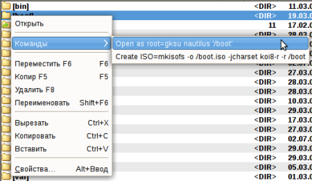
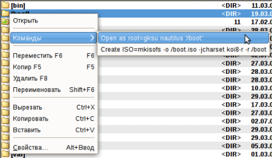
Чтобы Double Commander выполнял какие либо действия над папкой (а не только над файлом), надо создать новую группу под названием Dir, а в расширениях для нее указать folder. Тогда все действия внесенные в список команд в этой группе будут отображаться в подменю 'Команды' контекстного меню папки. Например, для Ubuntu открыть папку в Nautilus с правами Root надо в строке Действие указать Open as root, а в строке Команда вписать команду gksu nautilus '%p'.
Значок — здесь указывается путь к файлу значка, в виде которого будут отображаться все файлы имеющие расширения, указанные в данной группе.
3.1.7. Меню "Помощь"
Отсюда можно получить доступ к справочной информации и сведениям о программе:
Содержание — открывает начальную страницу этой справки
Горячие клавиши —открывает страницу со списком горячих клавиш
Посетить сайт Double Commander — при наличии Интернета позволяет посетить web-страницу проекта
О программе... — информация о версии и разработчиках
3.2 Панель инструментов

С ее помощью вы можете вызывать внутренние команды Double Commander, внешние программы и выполнять некоторые станартные операции. Если задержать курсор мыши над кнопкой — появится всплывающая подзказка.
Получить доступ к настройкам панели можно, щелкнув правой клавишей мыши по панели и выбирав в меню пункт Редактировать.
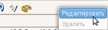
Откроется диалоговое окно "Настройка панели инструментов"

Первая строчка указывает из какого файла Double Commander будет брать настройки для панели инструментов (структура файла аналогична таковому у TC), под ней находятся значки добавленных на панель кнопок.
Добавить — добавляет новую кнопку на панель, с пустыми параметрами.
Удалить — удаляет выбранную кнопку.
Размер — поле, в котором указывают, какого размера будут значки на панели. Лучше указывать 16 или 22 или 32, так как это размеры остальных иконок в Double Commander. Но допускаются любые цифры, размер задается в пикселях.
Плоские — делает кнопочки на панели визуально в виде кнопок или только в виде значков.
Команда — строка, в которой можно выбрать любую внутреннюю команду, или указать свою, например для запуска приложения (команды для приложений можно брать из главного меню системы).
Параметры — в строке указывается параметр, который будет использован при выполнении команды (для каждой команды свои).
Путь запуска — используется для указания полного пути к файлу программы (при необходимости).
Файл значка — в этой строке указывается путь к файлу значка, который будет использован для отображения кнопки.
Значок — показывает как будет выглядеть кнопка на панели.
Подсказка — текст, введенный в эту строку, будет отображаться при задержке указателя над значком запуска на панели. Если в эту строку вписать "-" (минус), то вместо кнопки получим разделитель.
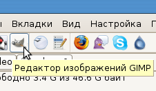
Существует возможность создать выпадающее меню:
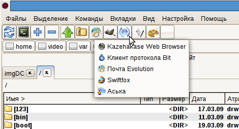
Для этого в строке Команда надо выбрать cm_ShowButtonMenu, а в строке Параметры указать расположение файла, с настройками для выпадающего меню (или просто его название, если он расположен в той же папке). Структура файла выпадающего меню аналогична главному.
3.3. Панель кнопок дисков
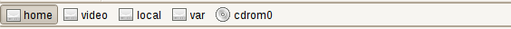
Кнопки дисков позволяют быстро сменить диск просто нажав на соответствующую кнопку. Щелчок правой клавишей мыши по кнопке вызывает контекстное меню, из которого можно произвести операции монтирования/размонтирования, форматирования и др. (зависит от используемой системы).
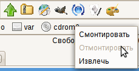
3.4. Кнопка меню дисков
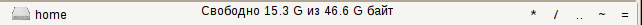
Правильнее было бы сказать "информационно-нафигационная" панель :-), т. к. помимо самой кнопки меню дисков здесь отображается информация об общем объеме диска и наличии свободного места. Здесь же находятся кнопки, облегчающие навигацию — « / .. * ~ =».
Кнопка меню дисков, в принципе для того чтобы просто сменить диск, выбрав из выпадающего меню (команда cm_LeftOpenDrives для левой панели и cm_RightOpenDrives — для правой). Это же действие можно выполнить с помощью горячих клавиш (Alt+F1 и Alt+F2 по умолчанию, но в Линуксах лучше поменять эти сочетания, так как они уже заняты).

Так же можно немножко пояснить назначение вспомогательных кнопок:
«/» — переход в корень системы
«..» — переход на один каталог (уровень) выше
«*» — закладки аналог избранного. Подробнее в разделе Личный список каталогов
«~» — переход в домашний каталог
«=» — аналогично команде Две одинаковые панели (Alt+Z по умолчанию).
3.5. Панель заголовков вкладок
Служит для отображения всех вкладок и для переключения между вкладками (Ctrl+Tab, Ctrl+Tab и Ctrl+Shift+Tab по умолчанию). По щелчку правой кнопкой мыши открывается список вкладок. В заблокированных вкладках перед названием отображается звездочка (если включена опция Отмечать заблокированные вкладки звездочкой *).
3.6. Имя текущего каталога

Cлужит для отображения имени текущего каталога. При щелчке левой кнопкой мыши выпадает история смены каталогов (команда cm_DirHistory)
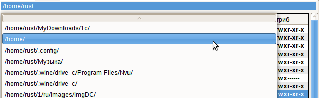
Щелчкнув правой, можно скопировать текущее расположение каталога или же ввести вручную необходимый путь (полезно для доступа к сетевым ресурсам).
3.7. Панель заголовков колонок
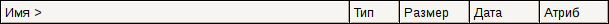
Указывает какой параметр файла или папки отображается в данной колонке. При щелчке левой кнопкой мыши происходит сортировка содержимого файловой панели по любому из параметров, имеющихся в заголовке. При щелчке правой кнопкой вызывается диалог выбора стиля колонок, и доступа к настройкам стилей, включая текущий.

Defaut, Brief, my_style — уже имеющиеся стили настроек колонок
Настроить текущий набор колонок — открывается диалог настроек стиля колонок, который использован в данной файловой панели. Подробнее в разделе Настройка набора
Настроить наборы колонок — открывает диалог Колонки в разделе Параметры
3.8. Строка состояния

Отображает количество и размер выделенных файлов из общего количества и размера файлов в каталоге.
3.9. Окно консоли

Это информационое окно, здесь выводится информация, о том какие действия совершает программа в консоли (оформление, показанное на скриншоте, это настройки консоли, и к программе не имеет никакого отношения).
3.10. Командная строка

Командная строка используется для введения команд вручную. Вначале строки указан путь к каталогу, в котором будет исполняться команда, введенная здесь (на рисунке команда будет выполнятся в каталоге /home/rust/). Кнопка со стрелкой вниз в конце строки открывает историю команд введенных в эту строку.
При щелчке правой кнопкой мыши на строке получаем выпадающее меню:
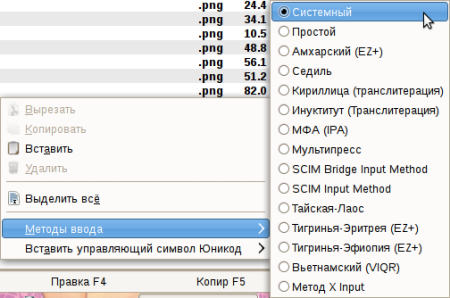 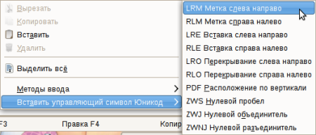
В котором помимо стандартных функций Вырезать, Копировать, Вставить, Удалить, Выделить все, так же имеются два подменю Методы ввода и Вставить управляющий символ Юникод.
3.11. Панель кнопок функциональных клавиш

Отображает назначение горячих клавиш соответствующему действию и обеспечивает быстрый доступ к самым распространенным командам с помощью мыши.